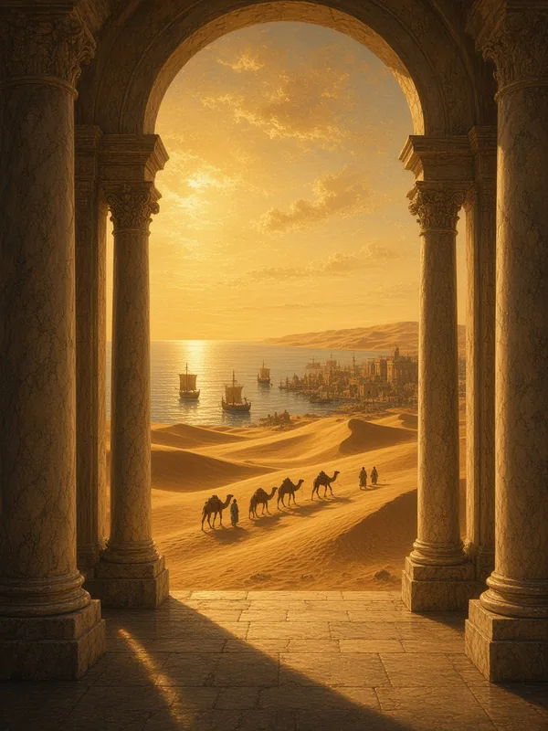
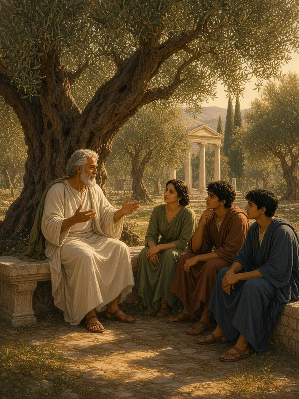

The Courses
Welcome to The Lyceum—a digital gathering place for the study of humanity’s great stories, beliefs, and moral traditions. Here you will find lectures spanning continents and millennia, each designed to illuminate the past and inform the present.
-
American History
From colonial foundations through reconstruction—the forging of a republic and its ongoing experiment in self-governance.
Enter -
Chinese History
Five millennia of dynastic rise and fall, philosophical revolution, and the world’s longest continuous civilization.
Enter -
World Religions
Comparative studies in faith and practice—exploring humanity’s diverse answers to life’s ultimate questions.
Enter -

World History
The grand narrative of human civilization—empires, exchanges, and the forces that connect all peoples.
Enter -

Ethics
The examined life—virtue, duty, consequence, and the perennial search for how we ought to live.
Enter